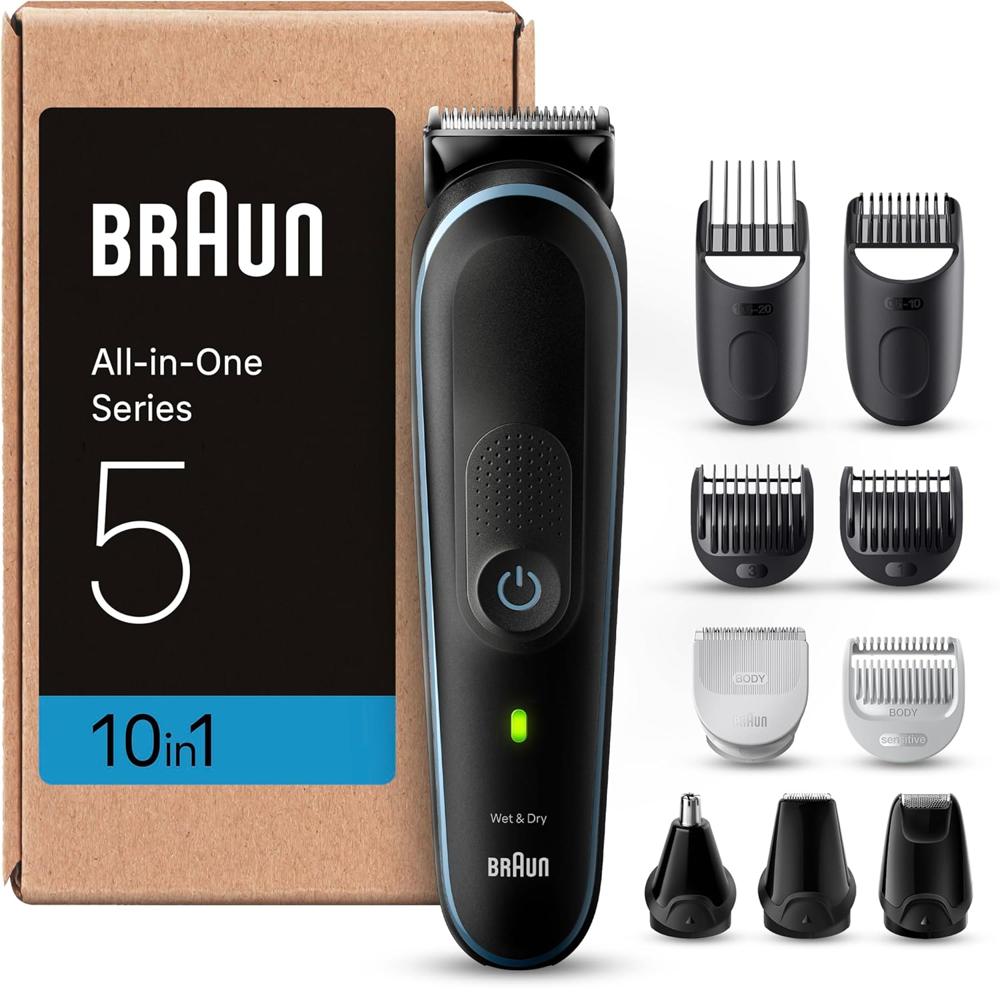
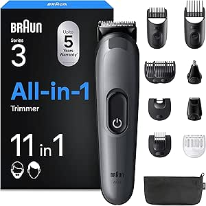

Recomendação OndeCortarRotina completa
Braun Series 5 MGK5445
Indicado para quem quer resolver barba, cabelo e retoques no corpo com um único aparelho.
Antes de comprar
- Melhor para: Rotina completa
- Ponto forte: várias cabeças para barba, cabelo, corpo e nariz
- Mais a favor:evita comprar vários aparelhos separados

Porque recomendamos
Entra na seleção quando a prioridade é simplificar a rotina e concentrar várias tarefas no mesmo aparelho.
Para quem é
Indicado para quem quer resolver barba, cabelo e retoques no corpo com um único aparelho.
Onde faz sentido
Faz sentido em casa para quem prefere uma solução completa em vez de comprar uma ferramenta para cada função.
Pontos fortes
- várias cabeças para barba, cabelo, corpo e nariz
- evita comprar vários aparelhos separados
- boa escolha para quem quer tudo arrumado numa só base
Limitações
- menos especializado do que ferramentas dedicadas
- pode ser excessivo para quem só precisa de aparar a barba
Loja afiliada
Confirmar preço e disponibilidade
O preço e o stock mudam com frequência. Confirma diretamente na Amazon.es antes de decidir.
Transparência: Alguns links da loja são afiliados. Se comprares através deles, o OndeCortar.pt pode receber uma comissão por compras elegíveis.
Revista OndeCortar
Ver revistaArtigos relacionados
Leituras sobre o mesmo tema para quem quer perceber mais antes de seguir em frente.
Comparar alternativas
Outras opções que vale a pena ver
Se este produto está perto do que procuras mas ainda não fecha a decisão, estas alternativas ajudam a afinar a escolha.

